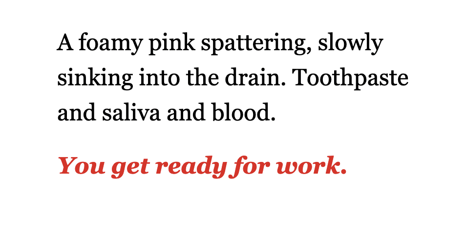

apparition apparatuses
narrative design
A game about hauntings and bureacracy.
Apparition Apparatuses is a Twine game following a woman who works at a corporation that handles spiritual subscriptions. The souls of the dead are accessible via paywall, unless they're particularly adept at sneaking around. The game is about loose ends, dissatisfaction, and bureacracy.
links
play in-browser
